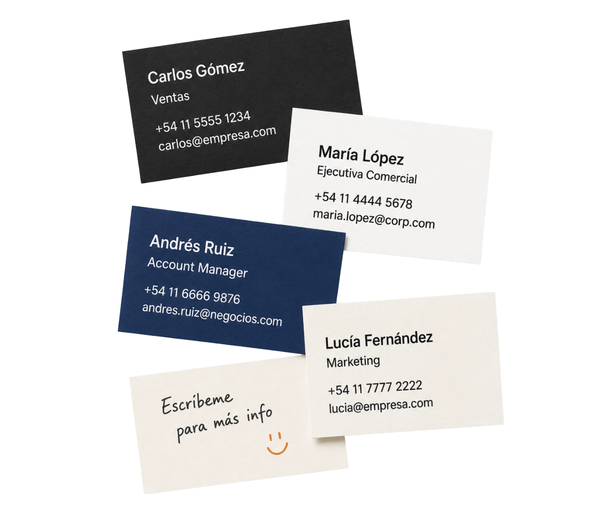
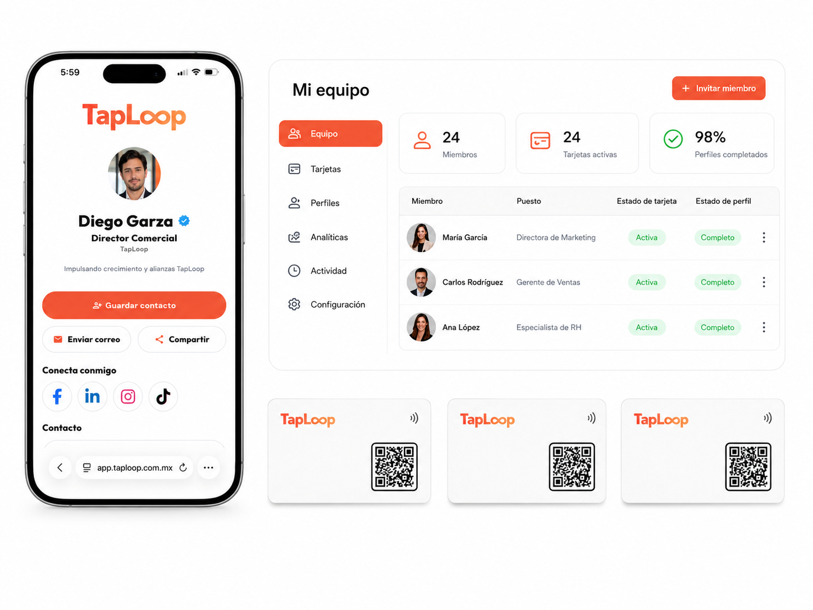
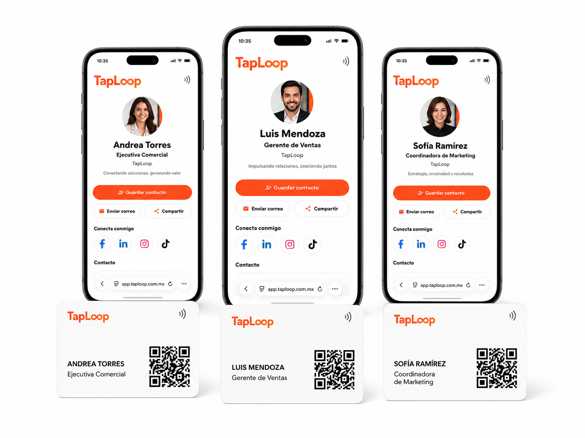
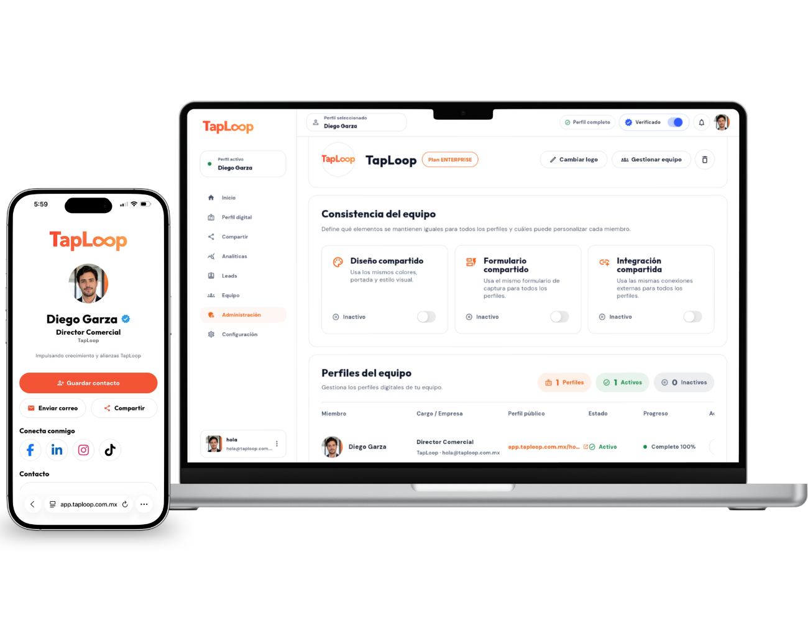
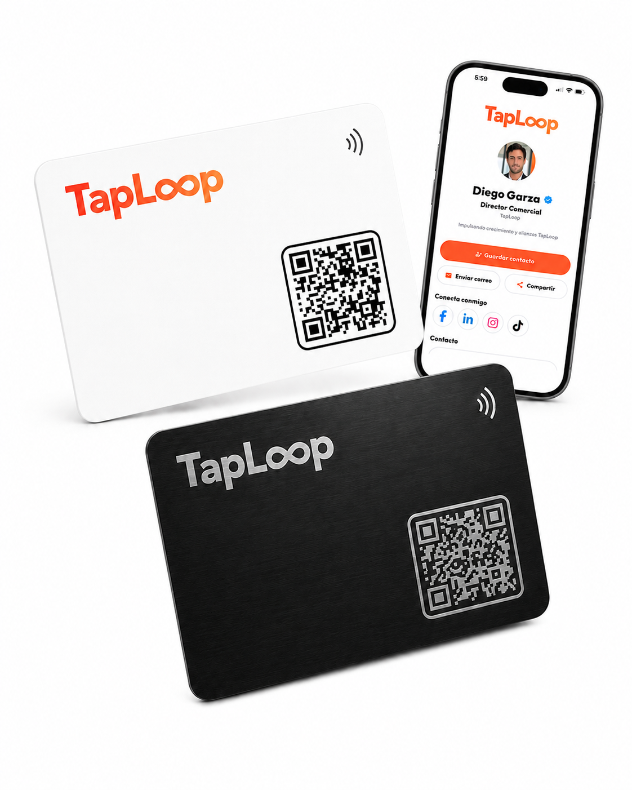
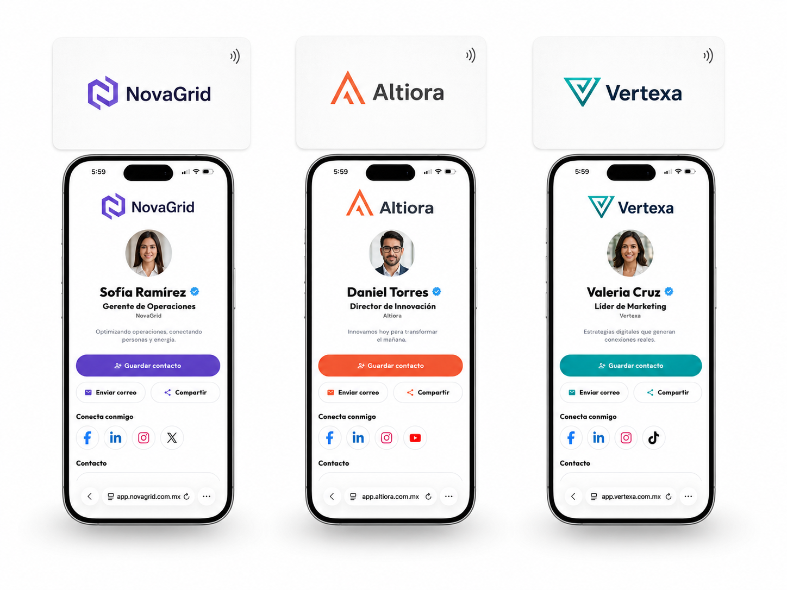
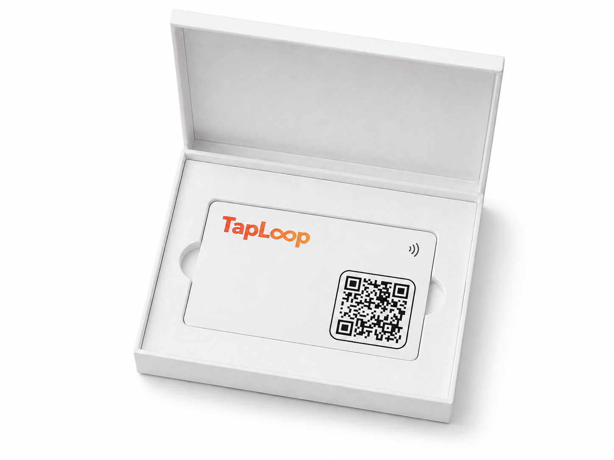
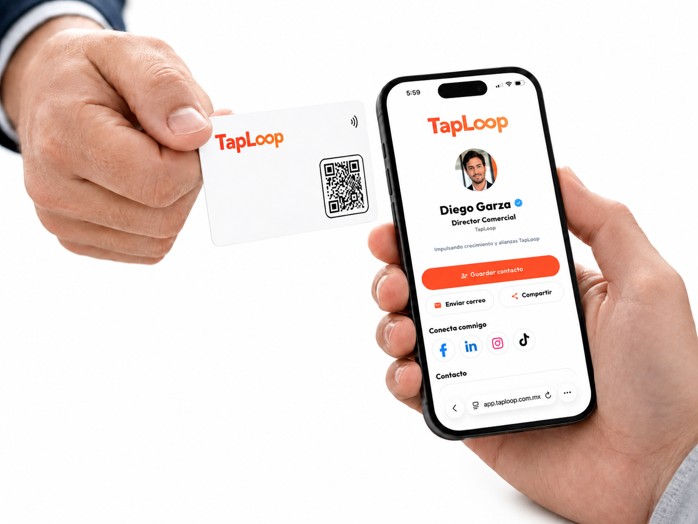
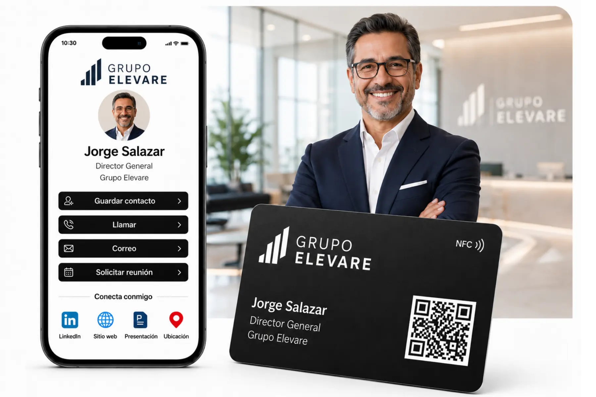

Antes
- Diseños diferentes
- Datos desactualizados
- Información difícil de administrar
- Sin visibilidad del uso

TapLoop para empresas
Equipa a tu equipo con tarjetas NFC personalizadas y perfiles digitales individuales, todos alineados con la identidad de tu empresa.
Diseño corporativo · Perfil por colaborador · Administración centralizada

Una mejor forma de presentar a tu equipo

Perfil individual por colaborador
Mantén una identidad visual consistente mientras cada integrante comparte su propia información profesional.
Información propia de cada colaborador.
Teléfono, correo y WhatsApp.
LinkedIn, sitio web, agenda y más.
Mismos colores, logo y estilo visual.

Plataforma para equipos
Gestiona perfiles, tarjetas y datos profesionales sin depender de cada colaborador para mantener la información actualizada.
Consulta y administra cada colaborador.
Cambia puestos, teléfonos y enlaces.
Mantén colores, diseño y elementos comunes.
Agrega perfiles conforme crece tu equipo.

Más que tarjetas de presentación
Consulta actividad y recibe contactos generados desde los perfiles de tu equipo.

Consulta visitas, toques NFC y clics.

Centraliza los contactos generados por tu equipo.
Menos tarjetas olvidadas. Más visibilidad de cómo se utilizan.
Nosotros nos encargamos
Cantidad, tipo de tarjeta y necesidades.

Iniciar propuestaInformación de cada colaborador.

Preparamos tarjeta y perfil para aprobación.

Todo configurado y listo para usar.

Casos de uso
Comparte contacto, catálogo y agenda reuniones.

Una presentación premium para reuniones y networking.
Mantén perfiles y marca consistentes entre colaboradores.
Empresas que confían en TapLoop
Preguntas frecuentes para equipos
Sí. Cada perfil puede incluir nombre, puesto, teléfono, correo, WhatsApp, redes y enlaces propios.
Sí. Creamos una línea visual con logo, colores y estilo de tu empresa.
Sí. Puedes usar PVC para equipos comerciales y metálicas para directivos o puestos clave.
Sí. Los perfiles digitales pueden actualizarse sin reemplazar la tarjeta física.
Sí. Podemos producir tarjetas adicionales manteniendo el diseño aprobado.
Te guiamos con una plantilla o formulario para reunir los datos de forma ordenada.
Sí. Programamos NFC, vinculamos QR, verificamos perfiles y entregamos todo listo.
Cotizar para equipos
Cuéntanos cuántos colaboradores necesitas y preparamos una propuesta personalizada.